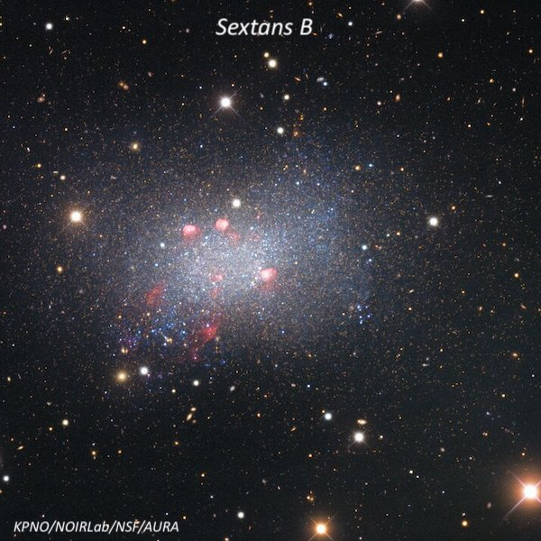
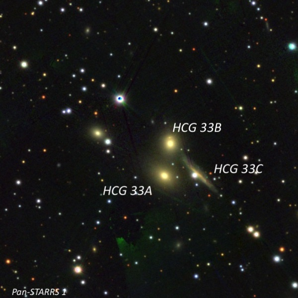
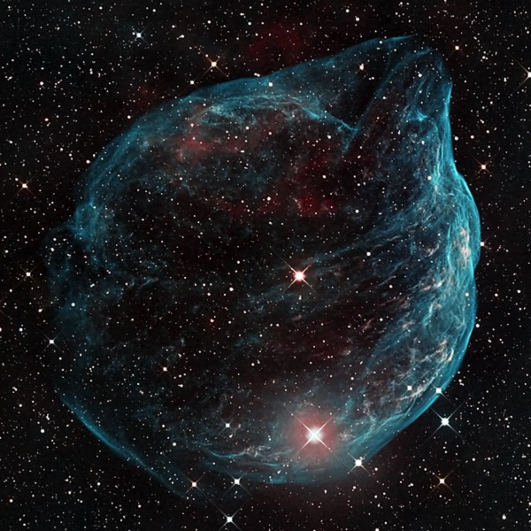

Blowing Bubbles in the Wind, Lake Sonoma, Feb. 1, 2003
With the sky clearing this past weekend, I took advantage of quite transparent conditions on Saturday, February 1st, with Matt Marcus from Berkeley and Shneor Sherman from Davis. Then I returned two nights later on Monday and observed again with Robert Leyland and David Silva. Because of the weather, these were the first opportunities I had to observe in four months!
The conditions were iffy during the day on Saturday, so only Matt and Shneor decided to take a chance on observing. Matt mentioned in his observing report that “We were at Grey Pine because Lone Rock was closed. The Ranger came by at sundown and explained that Lone Rock was closed due to mud and that they’ve started closing most of the turnouts after dark. I think he hadn't realized what goes on there in the dark.”
It was a bit breezy in the early evening, and the seeing was a bit soft on Saturday night at Grey Pine, but humidity was low and the transparency was excellent. The zodiacal light was blazing in the west at the end of astronomical twilight. I ended up observing for 5 hours (7:00 PM until midnight). Conditions were even better on Monday night (excellent seeing, very calm, no dew).
Here are a few of the highlights:
Sextans B
10 00 00 +05 19 56
Size 5.1' × 3.5', Magnitude 11.3V, Surface Brightness 14.3V
Sextans B (UGC 5373) is dwarf irregular galaxy that is often included in lists of local group galaxies. But recent rsesearch shows it probably lies just outside the dynamical Local Group system at a distance of 4.3 million l.y. in a small group that includes NGC 3109, Sextans B and the Antlia Dwarf.
I picked up Sextans B without difficulty at 100×, just 8' NE of mag 7.7 SAO 118040. Increasing to 140×, Sextans B appeared as a large, oval glow, elongated 3:2 WNW-ESE, and spanning about 3.5' × 2.2'. The galaxy has a low surface brightness and only a broad, weak concentration. The surface seems slightly irregular or mottled and four fainter stars are near the periphery. Overall, the observation was surprisingly easy though I had never searched for it before.

I've been slowly working through the brightest quasars (about a dozen observed) and had no trouble with this quasar in Eridanus. With a redshift of z = 0.573, this object lies roughly 6 billion light-years away. For comparison, the famous quasar 3C 273 in Virgo is only 1/3 of this distance.
PKS 0405-123
04 07 48.4 -12 11 36
Magnitude: 14.9V
I was able to identify this quasar immediately using 220x in a star field populated by widely spaced 11th to 13th magnitude stars. The quasar appears as a mag 14.5-15 "star" (V = 14.86), and it is situated 2.3' SSW of a mag 11 star and 3.3' NE of a mag 12.5 star. I find it visible using direct vision without difficulty.
I had lost interest on my Hickson Compact Group survey (10 nasty ones to go out of 100 total), but after Randy Muller reported success with 99 groups (detecting at least one member), I felt compelled to dust off my finder charts of the remaining 10 and finish up the list! So, I took a look at a new one, HCG 33, which revealed a close pair of faint galaxies:
HCG 33A = PGC 16867
05 10 47.6 +18 01 11
Size: 0.4' × 0.4'
HCG 33A is the southern member of a close pair with HCG 33B just 40" to its north. It appears very faint, very small (perhaps 16" × 12"), and is probably elongated 4:3 SW-NE. A mag 13.5 star is just 36" W. HCG 33A seems slightly less prominent than HCG 33B.
HCG 33B is faint, very small, elongated 3:2 N-S, roughly 20" × 14". A mag 13.5 star situated 0.8' SW forms the SW vertex of a small triangle with HCG 33A and 33B

Under excellent transparency conditions, I enjoy tracking down faint, large, emission nebulae. The Sharpless catalogue of HII regions published in 1959 has a large number of obscure HII regions — and some of these are little-known gems.
Sh 2-309
07 31 47 -19 21 54
Size: 12'
Using 100×, I immediately noticed a small clump of four stars that seemed weakly nebulous, but there was no responses using an O III, UHC or H-beta filter. At 140x, a very small knot was visible on the following side of this small group of stars, but there still was no filter response. When I increased to 220×, the contrast increased further on the nebulous knot and the small clump of stars (~1.5' diameter) seemed encased in a weak nebulous glow, perhaps a couple of arcminutes in size (the listed diameter for Sh 2-309 is 12'). Sh 2-309 is located 22' WNW of a mag 5.6 HD 60341 and 10' NNE of mag 7.5 SAO 153009.
The surprise of the weekend was Sh 2-308 in Canis Major — an amazing 40' circular bubble that shows up at very low power (I used a 31mm Nagler) with an O III filter. This object is windblown material ejected by the Wolf-Rayet star EZ CMa (WR 6), which resides at the center of the bubble.
On Monday night, we had David Silva's 14.5" GoTo Starmaster, along with Robert Leyland's and my 17.5" dobsoonians.
Sh 2-308
06 54 13.0 -23 55 42
Size: 35'
This huge, obscure, Wolf-Rayet ring was a surprise at 100× as it appeared as a faint, roughly circular 35'-40' glow just north of naked-eye 16 Canis Majoris! Although faintly visible without a filter, it was quite distinct with an OIII filter, as a very high contrast 25' border running ~N-S along the western border. This edge is the only portion that shows some structure and irregularities in surface brightness, but it has a pretty dramatic edge (ionization front) with the dark sky to the west. On the south end, the nebula bends east, crossing through the middle of a trio of mag 7.5-8.5 stars and then passing just south of mag 3.9 16 Canis Majoris.
The eastern border fades in brightness and is difficult to trace the edge. On the northern side there is a locally brighter patch that involves a small group of stars. The NW corner is sharply angled between the N-S running bright western edge and E-W running northern edge. Near the center (offset a bit west) is mag 6.7 Wolf-Rayet star EZ CMa (mag 6.71-6.95). This object responds dramatically to an OIII filter at 63× (31mm Nagler), but it is barely visible without a filter.
